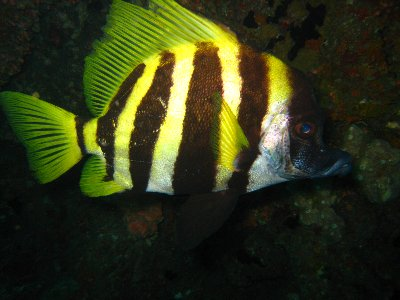
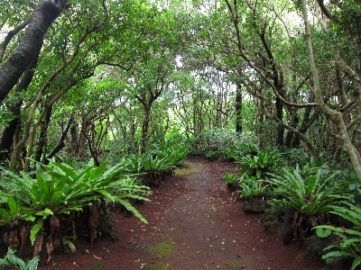

八丈島で夏休み | 2013年9月 |
|---|---|
| 毎年行っている沖縄は、仕事が忙しくて時間が取れなく今年は断念！夏休みは消滅だな。 しかし、島には行きたい！飛行機も乗りたい！ ってことで、近くて遠い「八丈島」に行ってきました！ | |
 いつもは羽田から西に飛ぶけど、今回は南へ |  海が綺麗です〜 |
| 八丈島って東京ですよ。しかし羽田から飛行機で50分位掛かります。 一日3便飛行機が出ているので、意外に現地で遊ぶ時間は取れます。 今回は仕事が忙しく、本当に休めるか怪しかったので、宿を決めたのは出発の2日前。 ダイビングショップを決めたのは現地でした。 それでも、宿の人とかが気を遣ってくれたりして、問題なく楽しい旅でしたね。 沖縄の離島ほど世間離れしてなく、都会でもない感じの島で、中途半端と言えばそれまでですが、のんびり田舎を堪能するなら良いかと思います。 八丈島は昔、流刑の島（いわゆる島流し）なんですね。その辺の歴史も郷土資料館に行くと勉強になります。 温泉も幾つかあります。島に来る人は、主にダイビングか釣り人みたいですね。なんかデカイ魚釣れるみたいでしたが、今回釣りまで手が回りませんでした。 | |
 今回お世話になった宿 |  八丈島富士 |
 夕焼けがメチャ綺麗でした |  う〜ん、フラッシュたくとカラフルだなー ダイビングにて |
|  大きさかな一杯です |  海底から上の橋のようになった地形を |
|  植物園へ |  島寿司 |
| 写真＆コメント ｂｙ べっしー | |